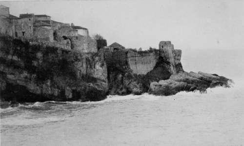
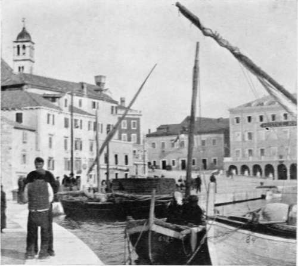
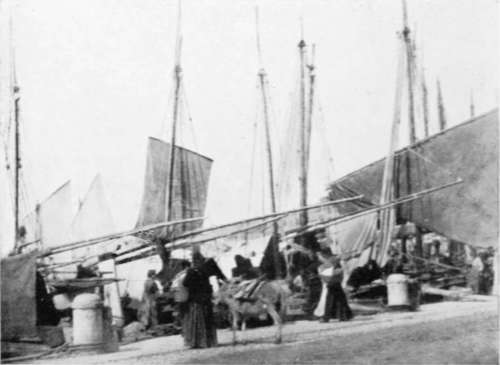

The Journey Out To Bosnia And Montenegro. Continued
Description
This section is from the book "Bird-Hunting Through Wild Europe", by R. B. Lodge. Also available from Amazon: Bird-Hunting Through Wild Europe.
The Journey Out To Bosnia And Montenegro. Continued
The railway from Serajevo to Gravosa, on the Adriatic, is a fine bit of engineering, the line winding-round the mountains in zigzag curves. Through Herzegovina especially the scenery is very impressive. From the carriage window one sees a constant succession of pictures of snow-clad mountains, waterfalls, and rocky rivers. Occasionally an Eagle may be seen suspended over the valleys, and once a huge nest was seen in a small tree, not ten feet from the ground, half-way up a steep hillhelp. One never knows, however, what is to befall one; and I was destined to see a good deal of Albania and the Albanians before I had finished my quest.
My first landing on Montenegrin soil was a very weird experience. Owing to a strong sirocco wind, the steamer was unable to put into Dulcigno itself, but was obliged to use an alternative landing-place behind the hills which encircle the town, called Val de Noche, always used when this particular wind prevails. Here I was landed, the only passenger, sitting on a tub in a large boat full of cargo. On arrival at the pebbly beach at the end of the inlet, where one solitary building was the only sign of human habitation, I was received by a band of half-naked savages, to all appearance, capering in and out of the surf preparing to land the cargo. One of these, as black as any negro, landed me on his back. On the steamer I had just left nobody had thought it necessary to tell me that this was not Dulcigno itself, so that I found myself alone with these men unable to speak a single word which they could understand or to understand any word of theirs, and without the faintest notion where Dulcigno was situated, how far it was, or how to reach it. Above all, I did not know then, as I found out later, that a stranger in Montenegro, more especially an Englishman, is perfectly safe, that theft and robbery or brigandage is absolutely unknown, and that the huge revolvers worn universally are only used in avenging private vendettas, in their feuds with their ancient enemies the Albanians, and in saluting parting friends. All this I had to find out, and I must say that this first experience was by no means pleasant. However, by signs I managed to engage two men and a couple of horses to convey my baggage to the town. As the heavily laden horses toiled uphill through the olive-woods my men, two of the wildest-looking rascals I had ever beheld, beguiled the way with song and laughter, while I walked with them in perfect ignorance of what was going to happen. After an hour's journey over narrow, rocky mountain-paths we reached a small town of grey stone houses built irregularly round the small bay. Then, after descending a narrow, stony road or lane, my conductors halted in front of a building which proved to be the custom-house. The official, a burly man in the national costume of crimson gold-edged jacket, baggy blue breeches, and top-boots, with the inevitable revolver stuck in a scarlet sash, passed all my things without the slightest bother, and I was free to proceed. The only inn appeared to be a small building pleasantly situated on the beach, and here I engaged a room- at least I got my things carried up there-and obtained something to eat and drink ; but as for making any arrangement about terms, that was far beyond my powers. However, as soon as I had settled down and finished my repast, I went forth to try to find the house of one of the chief men in the town, to whom the Austrian consul at Antivari had given me an introduction. He also was dressed in the national costume, and a handsome old fellow he looked. Tall, as are all the Montenegrins, with an imposing, aristocratic presence, his beetling brows and strong, hooked nose gave him the appearance of some fierce bird of prey. He accorded me a most courteous reception, while I explained, as well as I could, my reasons for visiting his country. Unfortunately, he could speak very little French, and of course no English, but promised to do what he could to assist me. This promise was very soon redeemed, for shortly after my return to ' mine inn ' he brought to my room a law student who spoke most excellent French : indeed, I soon found that he knew and spoke fluently nearly every European language except English and Spanish.
It is quite a common thing in these countries of Eastern Europe to find, not only among the educated classes, but among the ordinary working population, people who speak fluently two or three languages besides their own. This is not a question of education at all, for the majority have never had any, but they have acquired from their infancy, instead of one language, the two or three which have happened to be generally used around them. Italian, for instance, is the language of the Adriatic generally, the sailors' language, from the small coasting craft, which make such a picturesque feature in all the small ports on both shores of the Adriatic, to the large steamers of the Austrian-Lloyd, and the Ungaro-Croatia, on board of which Italian is the official language. Shipping, of course, means trade; and in consequence Italian is the most universally spoken language all down the coast, and for some considerable distance inland. In fact, it is so indispensable that, previous to my second visit to these parts, I took some lessons in Italian, and in consequence enjoyed my travelling much more, was considerably more independent, and saved a great deal of expense. French is also useful, but only in the towns, among the officials, the consuls, and the higher classes. Among the fishermen, boatmen, and the working people whom I have to engage as guides and carriers, French is quite useless, as is English. People who say that they can travel all over the world with English should visit some of the places in these countries, and they would find themselves very much at sea if they knew no other language. On all the regular routes, and in towns visited by tourists, English serves well enough all over the world. On the steamer lines in the Adriatic, for example, the captains, and generally several of the officers, speak English. In fact, unless they can speak English, French, and German, as well as Italian, there is no chance of their obtaining a captain's certificate- this being one of the rules of the Austrian-Lloyd Company. But once off the steamer English is perfectly useless until Corfu is reached. This, of course, belonged to England for many years until restored to Greece some thirty years ago. And in some of the small south Albanian ports opposite Corfu, where English sportsmen go regularly for Woodcock and Wild Boar shooting, doubtless some English might be understood by the natives.
Old Venetian Castle, Dulcigno
German is the official language from Trieste to Cattaro, the southernmost port of Dalmatia being that country under the sway of Austria. Indeed, there is great rivalry between Austria and Italy, not only in language, but in politics and trade. Each country is doing all it can to push its own trade, its own influence, and its own language to the front. Both countries, and, in a lesser degree, Greece also, are undoubtedly looking forward to the time when the Turk shall be pushed back still farther south, and are preparing by all the means in their power to step into the vacant territory.
Montenegro, with its own ambitions of a Servian kingdom, has so far preserved its independence, but fears and hates Austria almost as much as it does its hereditary enemies the Turk and the Albanian ; but in Albania, the most northern Turkish possession, Italy and Austria are openly vying with each other in extending their sphere of influence.
The Quay, Sebemco. Dalmatia
Spalato
In Albanian towns there are Italian and Austrian schools which almost pay children to come and be educated. As far as language goes, however, Austria is at an immense disadvantage, for German taught in the schools can never hope to compete with Italian picked up spontaneously by the people in their daily lives.
The Jews in these countries were originally of Spanish extraction, so that it is not at all unusual to find Spanish spoken.
In Montenegro the people are Serbs, and Servian is the national language. In Albania the officials are Turks, so that two quite distinct languages are spoken. Farther south Greek begins to be in much use. So that it is not very surprising to find amid all these complexities of race and language a polyglot people who speak fluently from three to seven or eight different tongues.
Continue to:
- prev: III. The Journey Out To Bosnia And Montenegro
- Table of Contents
- next: IV. The Quest Of The Pelican : Montenegro